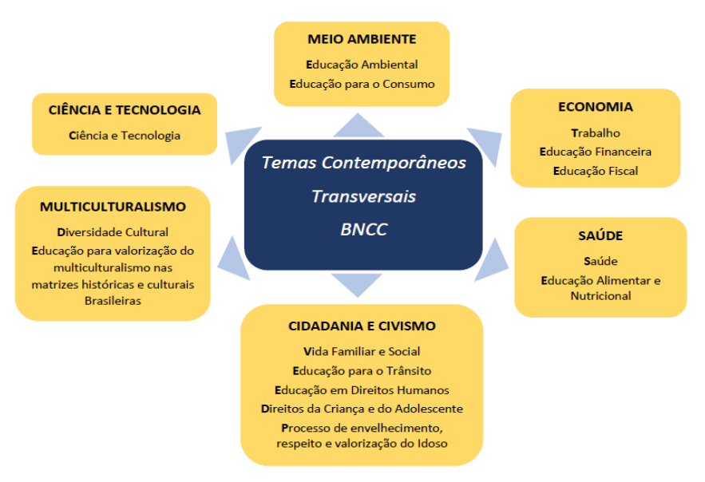

Planos de aula
Integrar temas transversais ao plano
Gerador de prompt para plano de aula
Preencha os campos, gere o prompt e confira o texto antes de copiá-lo para a IA. Os campos de identificação podem ser reaproveitados nesta aba. Planos, anotações e demais textos ficam somente nesta página.
Parta do plano já elaborado e escolha um problema que faça sentido para a turma. Depois de gerar a resposta, confira se o tema mudou as atividades e a avaliação, além do título.

Consultar os temas em texto
- Meio Ambiente: Educação Ambiental; Educação para o Consumo.
- Economia: Trabalho; Educação Financeira; Educação Fiscal.
- Saúde: Saúde; Educação Alimentar e Nutricional.
- Cidadania e Civismo: Vida Familiar e Social; Educação para o Trânsito; Educação em Direitos Humanos; Direitos da Criança e do Adolescente; Processo de envelhecimento, respeito e valorização do Idoso.
- Multiculturalismo: Diversidade Cultural; Educação para valorização do multiculturalismo nas matrizes históricas e culturais brasileiras.
- Ciência e Tecnologia: Ciência e Tecnologia.
Seu prompt
Carregando campos do prompt…